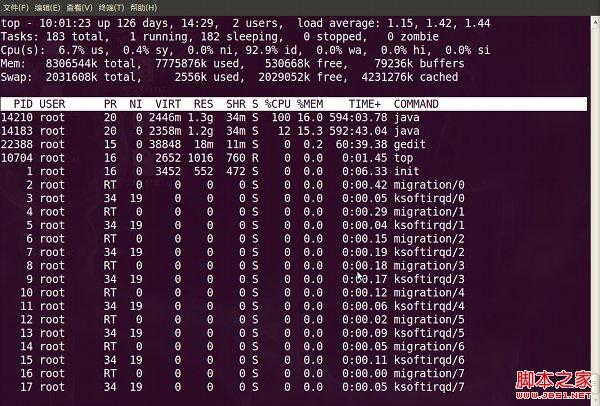
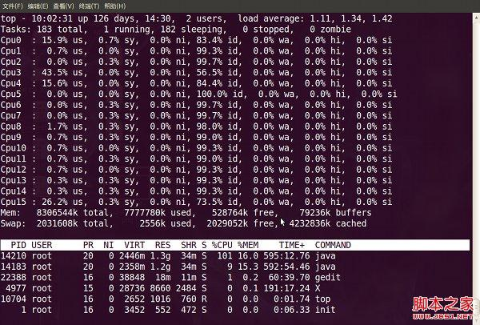
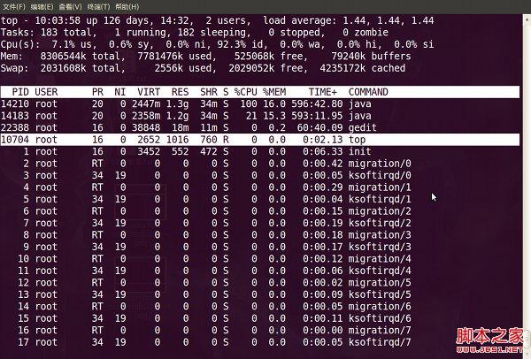
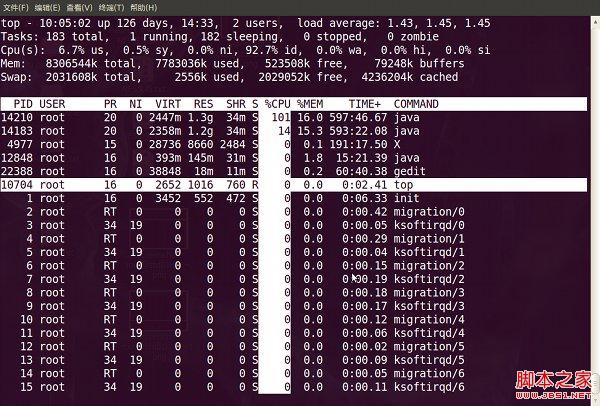
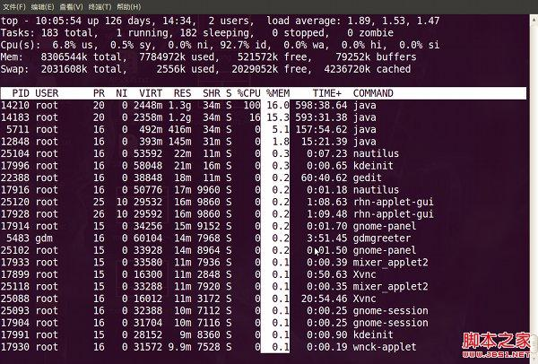
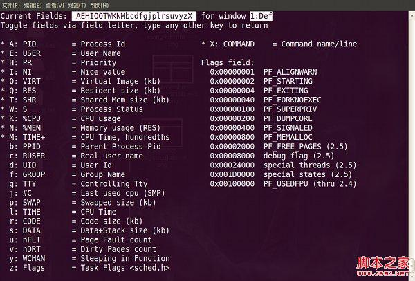
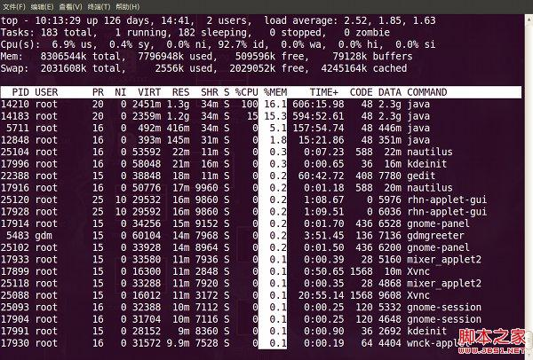

信息说明
统计信息说明：
敲top命令，进入如下视图：

第1行：Top 任务队列信息(系统运行状态及平均负载)，与uptime命令结果相同。
- 第1段：系统当前时间，例如：10:01:23
- 第2段：系统运行时间，未重启的时间，时间越长系统越稳定。
格式：up xx days, HH:MM
例如：126 days, 14:29, 表示连续运行了126天14小时29分钟 - 第3段：当前登录用户数，例如：2 user，表示当前只有2个用户登录
- 第4段：load average 系统负载，即任务队列的平均长度，3个数值分别统计最近1，5，15分钟的系统平均负载。
系统平均负载：单核CPU情况下，0.00 表示没有任何负荷，1.00表示刚好满负荷，超过1侧表示超负荷，理想值是0.7；如果这个数除以逻辑CPU的数量，结果高于5的时候就表明系统在超负荷运转了
多核CPU负载：CPU核数 * 理想值0.7 = 理想负荷，例如：4核CPU负载不超过2.8则表示没有出现高负载。
第2行：Tasks 进程相关信息
- 第1段：进程总数，例如：Tasks: 183 total, 表示总共运行231个进程
- 第2段：正在运行的进程数，例如：1 running,
- 第3段：睡眠的进程数，例如：182 sleeping,
- 第4段：停止的进程数，例如：0 stopped,
- 第5段：僵尸进程数，例如：0 zombie
第3行：Cpus CPU相关信息，如果是多核CPU，按数字1可显示各核CPU信息，此时1行将转为Cpu核数行，数字1可以来回切换。
- 第1段：us 用户空间占用CPU百分比，例如：Cpu(s): 6.7%us,
- 第2段：sy 内核空间占用CPU百分比，例如：0.4%sy,
- 第3段：ni 用户进程空间内改变过优先级的进程占用CPU百分比，例如：0.0%ni,
- 第4段：id 空闲CPU百分比，例如：92.9%id,
- 第5段：wa 等待输入输出的CPU时间百分比，例如：0.0%wa,
- 第6段：hi CPU服务于硬件中断所耗费的时间总额，例如：0.0%hi,
- 第7段：si CPU服务软中断所耗费的时间总额，例如：0.0%si,
- 第8段：st Steal time 虚拟机被hypervisor偷去的CPU时间（如果当前处于一个hypervisor下的vm，实际上hypervisor也是要消耗一部分CPU处理时间的）
第4行：Mem 内存相关信息（Mem: 8306544k total, 7775876k used, 530668k free, 79236k buffers）
- 第1段：物理内存总量，例如：Mem: 8306544k total,
- 第2段：使用的物理内存总量，例如：7775876k used,
- 第3段：空闲内存总量，例如：Mem: 530668k free,
- 第4段：用作内核缓存的内存量，例如：79236k buffers
第5行：Swap 交换分区相关信息（Swap: 2031608k total, 2556k used, 2029052k free, 4231276k cached）
- 第1段：交换区总量，例如：Swap: 2031608k total,
- 第2段：使用的交换区总量，例如：2556k used,
- 第3段：空闲交换区总量，例如：2029052k free,
- 第4段：缓冲的交换区总量，4231276k cached
windows的内存概念与Linux的不一样，如果按windows的方式此台服务器“危矣”：8G的内存总量只剩下530M的可用内存。Linux的内存管理有其特殊性，复杂点需要一本书来说明，这里只是简单说点和我们传统概念（windows）的不同。
第四行中使用中的内存总量（used）指的是现在系统内核控制的内存数，空闲内存总量（free）是内核还未纳入其管控范围的数量。纳入内核管理的内存不见得都在使用中，还包括过去使用过的现在可以被重复利用的内存，内核并不把这些可被重新使用的内存交还到free中去，因此在linux上free内存会越来越少，但不用为此担心。
如果出于习惯去计算可用内存数，这里有个近似的计算公式：第四行的free + 第四行的buffers + 第五行的cached，按这个公式此台服务器的可用内存：530668+79236+4231276 = 4.7GB。
对于内存监控，在top里我们要时刻监控第五行swap交换分区的used，如果这个数值在不断的变化，说明内核在不断进行内存和swap的数据交换，这是真正的内存不够用了。
进程信息：
在top命令中按f按可以查看显示的列信息，按对应字母来开启/关闭列，大写字母表示开启，小写字母表示关闭。带*号的是默认列。
| 列名 | 含义 |
|---|---|
| A | PID = (Process Id) 进程Id； |
| E | USER = (User Name) 进程所有者的用户名； |
| H | PR = (Priority) 优先级 |
| I | NI = (Nice value) nice值。负值表示高优先级，正值表示低优先级 |
| O | VIRT = (Virtual Image (kb)) 进程使用的虚拟内存总量，单位kb。VIRT=SWAP+RES |
| Q | RES = (Resident size (kb)) 进程使用的、未被换出的物理内存大小，单位kb。RES=CODE+DATA |
| T | SHR = (Shared Mem size (kb)) 共享内存大小，单位kb |
| W | S = (Process Status) 进程状态。D=不可中断的睡眠状态,R=运行,S=睡眠,T=跟踪/停止,Z=僵尸进程 |
| K | %CPU = (CPU usage) 上次更新到现在的CPU时间占用百分比 |
| N | %MEM = (Memory usage (RES)) 进程使用的物理内存百分比 |
| M | TIME+ = (CPU Time, hundredths) 进程使用的CPU时间总计，单位1/100秒 |
| b | PPID = (Parent Process Pid) 父进程Id |
| c | RUSER = (Real user name) |
| d | UID = (User Id) 进程所有者的用户id |
| f | GROUP = (Group Name) 进程所有者的组名 |
| g | TTY = (Controlling Tty) 启动进程的终端名。不是从终端启动的进程则显示为 ? |
| j | P = (Last used cpu (SMP)) 最后使用的CPU，仅在多CPU环境下有意义 |
| p | SWAP = (Swapped size (kb)) 进程使用的虚拟内存中，被换出的大小，单位kb |
| l | TIME = (CPU Time) 进程使用的CPU时间总计，单位秒 |
| r | CODE = (Code size (kb)) 可执行代码占用的物理内存大小，单位kb |
| s | DATA = (Data+Stack size (kb)) 可执行代码以外的部分(数据段+栈)占用的物理内存大小，单位kb |
| u | nFLT = (Page Fault count) 页面错误次数 |
| v | nDRT = (Dirty Pages count) 最后一次写入到现在，被修改过的页面数 |
| y | WCHAN = (Sleeping in Function) 若该进程在睡眠，则显示睡眠中的系统函数名 |
| z | Flags = (Task Flags <sched.h>) 任务标志，参考 sched.h |
| X | COMMAND = (Command name/line) 命令名/命令行 |
交互操作技巧
多U多核CPU监控
在top基本视图中，按键盘数字“1”，可监控每个逻辑CPU的状况：
观察下图【top视图 01】，服务器有16个逻辑CPU，实际上是4个物理CPU。

进程字段排序
默认进入top时，各进程是按照CPU的占用量来排序的，在【top视图 01】中进程ID为14210的java进程排在第一（cpu占用100%），进程ID为14183的java进程排在第二（cpu占用12%）。
可通过键盘指令来改变排序字段，比如想监控哪个进程占用MEM最多，我一般的使用方法如下：
敲击键盘“b”（打开/关闭加亮效果），top的视图变化如下：
我们发现进程id为10704的“top”进程被加亮了，top进程就是视图第二行显示的唯一的运行态（runing）的那个进程，可以通过敲击“y”键关闭或打开运行态进程的加亮效果。
敲击键盘“x”（打开/关闭排序列的加亮效果），top的视图变化如下：
可以看到，top默认的排序列是“%CPU”。
通过”shift + >”或”shift + <”可以向右或左改变排序列，下图是按一次”shift + >”的效果图：
视图现在已经按照%MEM来排序了。

改变进程显示字段
敲击“f”键，top进入另一个视图，在这里可以编排基本视图中的显示字段：
这里列出了所有可在top基本视图中显示的进程字段，有””并且标注为大写字母的字段是可显示的，没有””并且是小写字母的字段是不显示的。

如果要在基本视图中显示“CODE”和“DATA”两个字段，可以通过敲击“r”和“s”键：“回车”返回基本视图，可以看到多了“CODE”和“DATA”两个字段：

top命令的补充
top命令是Linux上进行系统监控的首选命令，但有时候却达不到我们的要求，比如当前这台服务器，top监控有很大的局限性。这台服务器运行着websphere集群，有两个节点服务，就是【top视图 01】中的老大、老二两个java进程，top命令的监控最小单位是进程，所以看不到我关心的java线程数和客户连接数，而这两个指标是java的web服务非常重要的指标，通常我用ps和netstate两个命令来补充top的不足。
1 | 监控java线程数： |
上面两个命令，可改动grep的参数，来达到更细致的监控要求。
在Linux系统“一切都是文件”的思想贯彻指导下，所有进程的运行状态都可以用文件来获取。
系统根目录/proc中，每一个数字子目录的名字都是运行中的进程的PID，进入任一个进程目录，可通过其中文件或目录来观察进程的各项运行指标，例如task目录就是用来描述进程中线程的，因此也可以通过下面的方法获取某进程中运行中的线程数量（PID指的是进程ID）：1
ls /proc/PID/task | wc -l
在linux中还有一个命令pmap，来输出进程的内存状况，可以用来分析线程堆栈：1
pmap PID
参考：